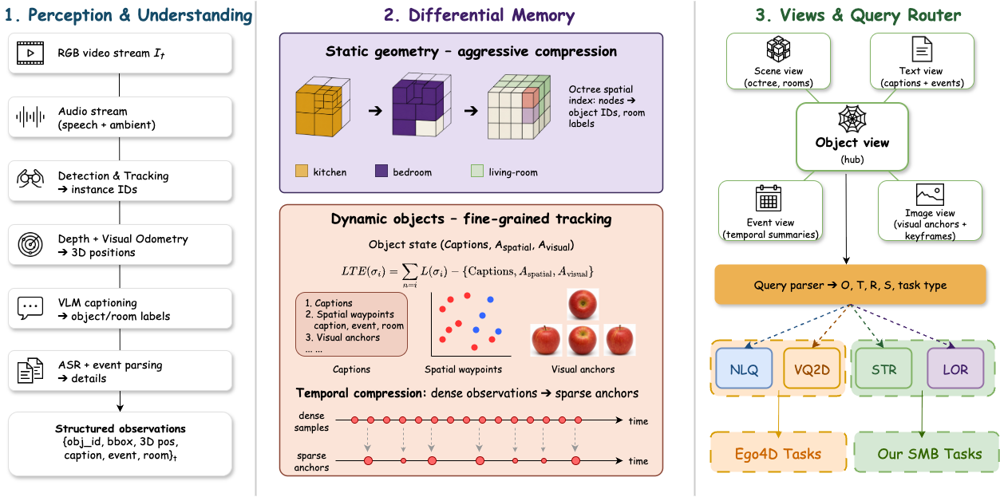

What changed?
Interval captions describe an object’s motion and state in language, making its history semantically searchable.
“Apple moved from sink to counter.”NeurIPS 2026 Accepted paper
Object-centric spatiotemporal memory
for long-horizon embodied
agents.
* Corresponding authors: Tianyidan Xie and Zili Yi
Embodied agents performing long-horizon tasks require a memory representation in which the state transitions of dynamic objects remain queryable in natural language across hours-to-days observation horizons. Existing systems either drop fine-grained motion (clip-level video-language embeddings), keep it only as raw coordinates (geometric SLAM), or organise it around immediate task context (agent working memories). None of them gives the agent a per-object timeline whose state transitions are themselves queryable in language. Our key contribution is Linguistic Trajectory Encoding (LTE), which compresses dynamic object motion histories via a hybrid representation combining natural language descriptions, sparse spatial anchors, and visual anchors. LTE adapts compression to motion complexity by anchoring periods without reliable observations to the last seen location, while representing motion with geometric waypoints and linguistic descriptions to preserve accuracy. To evaluate these capabilities across extended time horizons, we construct the Spatial Memory Benchmark (SMB) from EgoLife multi-day recordings, targeting capabilities absent in existing benchmarks: semantic trajectory retrieval and long-horizon object retrieval. On SMB, the LTE-based system achieves 45.3% success in semantic trajectory retrieval and 48.7% in long-horizon object retrieval, outperforming structured-memory and VLM baselines (best prior: 31.9% and 34.4%). LTE achieves trajectory compression by factors of 8.7× to 26.1× with sub-second query latency on 24 h video. On Ego4D natural-language queries, the system reaches 28.75% / 55.10% R@1/R@5, +15.80 / +31.30 pts over EgoVLPv2.
02 / THE METHOD
LTE combines complementary channels in a single per-object record.
Interval captions describe an object’s motion and state in language, making its history semantically searchable.
“Apple moved from sink to counter.”Sparse 3D waypoints preserve the shape of a trajectory. Complex motion keeps more anchors. Simpler motion needs fewer.
World position + observation timeCrops and bounding boxes ground the record in what was actually seen, supporting visual matching and identity checks.
Object crop + frame referenceMissing observations are not new evidence. Tracking gaps retain the last-seen location. The representation does not pretend to observe an object while it is out of view.

03 / ASK THE MEMORY
Four retrieval tasks probe time, visual identity, motion, and the last observed location.
EGO4D / NATURAL LANGUAGE QUERIES
Locate relevant moments in an observation history using a natural-language description.
EGO4D / VISUAL QUERIES 2D
A reference object crop is the query. Visual matching retrieves earlier evidence of that object.
SMB / SEMANTIC TRAJECTORY RETRIEVAL
Retrieve an object’s trajectory using semantic state, spatial, and temporal constraints.
SMB / LONG-HORIZON OBJECT RETRIEVAL
Search a long lookback window for an object’s most recent observed location.
Illustrative task examples, not live inference or recorded query results. The core code exposes explicit filters. This page does not run models.
04 / RESULTS IN THE PAPER
The Spatial Memory Benchmark (SMB) contains 600 queries across EgoLife multi-day recordings: 300 trajectory queries and 300 long-horizon object queries.
The strongest VLM baseline scans clips. LTE instead retains object-level histories, with linked language, geometry and visual anchors.
On Ego4D NLQ at IoU = 0.3, the paper reports 28.75% R@1 and 55.10% R@5.
Read the experimental settings and limitations| Method | STR ↑ | LOR ↑ |
|---|---|---|
| Q3VL-8B + GD | 21.5 | 25.1 |
| Q3VL-235B + GD | 31.9 | 34.4 |
| KFMem | 19.8 | 33.8 |
| VideoAgent | 24.7 | 30.5 |
| LTE-based system (ours) | 45.3 | 48.7 |
Source: arXiv:2609.04802v1, §4. These are reported research results, not new measurements of the scoped core release. Compression refers to LTE trajectory storage, not the total system footprint. Query latency excludes preprocessing and memory construction.
05 / THE CODE
We are preparing a focused release of the ST-Mem memory core for long-term embodied agent memory and natural-language spatial retrieval.
The implementation is not publicly available yet. Code, installation instructions, and functional validation notes will be linked here when the release is ready.
LTE · five linked views
Portable memory · four query
APIs
Offline perception adapters
Full benchmark reproduction
Evaluation / training
pipelines
Audio and navigation
The planned release focuses on core functionality, not full reproduction of the paper’s benchmark results.
The SMB description is public. Benchmark annotations and evaluation scripts are not distributed here.
06 / CITATION
Accepted at NeurIPS 2026. Please cite the arXiv version below until proceedings metadata is available.
arXiv:2609.04802@misc{xie2026linguistictrajectory,
title = {Linguistic Trajectory Encoding for Efficient Long-Horizon Spatial Memory in Embodied Agents},
author = {Tianyidan Xie and Shenyi Wang and Qiang Tang and Mingjie Wang and Zhicheng Qiu and Xuanfu Li and Zhan Xu and Jian Yang and Lanjun Wang and Zili Yi},
year = {2026},
note = {Accepted at NeurIPS 2026},
eprint = {2609.04802},
archivePrefix = {arXiv},
primaryClass = {cs.CV},
doi = {10.48550/arXiv.2609.04802},
url = {https://arxiv.org/abs/2609.04802}
}